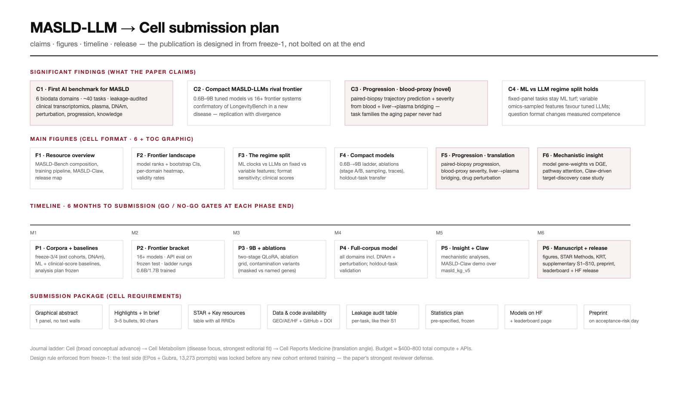

A working publication plan for the MASLD-LLM program: what the paper will claim, what each figure shows, how the statistics stay defensible, what Cell specifically requires, and how the six-month timeline gates. The test side was already frozen before any new cohort entered training — that decision was made for this document.
The LongevityBench paper landed in Cell on three legs: an open community resource, a conceptual finding (compact tuned models rival frontier systems), and full release. MASLD-LLM replicates that shape in a major disease — but replication alone is not a Cell paper. The submission must lead with what could not have been known from the aging study.
| Claim | Statement | Evidence required |
|---|---|---|
| C1 · Benchmark | MASLD-Bench is the first AI-evaluation suite for MASLD spanning six biodata domains (clinical transcriptomics, plasma proteomics, DNAm, perturbation, progression, molecular knowledge), ~40 tasks, leakage-audited at the cohort/subject/gene-family level. | Resource figure + per-task audit table (their Table S1 analogue). Already partially in hand: 58,194 prompts frozen with checksummed manifest. |
| C2 · Compact models | Multitask-tuned 0.6B–9B models match or exceed frontier LLMs on MASLD-Bench despite 10–100× fewer parameters. | Head-to-head vs ≥16 frontier systems (paper used 18; their Gemini-3.1-Pro benchmark) with bootstrap CIs and post-hoc paired tests. |
| C3 · Novel tasks | Progression prediction from paired biopsies and blood-proxy severity — task families the aging paper did not have — are learnable by compact models. | Performance above chance + ML baselines on MB-85xx/9xxx; this is the headline novelty over LongevityBench. |
| C4 · Regime split | The ML-vs-LLM regime split (fixed panels favour classical ML; variable omics-sampled features favour tuned LLMs) generalizes from aging to MASLD — a field-level lesson about where AI belongs in omics workflows. | Direct comparison on identical frozen items + feature-format ablations within one domain. |
C2 is confirmatory, C1 is infrastructure, C3+C4 carry the conceptual advance. If C3 tasks don’t clear baselines, the fallback framing is “benchmark + evaluation landscape” (still publishable, weaker journal).
| Figure | Content | Panels / source |
|---|---|---|
| F1 · Resource | Overview: MASLD-Bench composition across domains, L-LLM-style training pipeline, MASLD-Claw interface, release map. | (A) domain×task matrix (B) pipeline schematic (C) Claw screenshot (D) release/leaderboard. Mirrors their Figure 1. |
| F2 · Landscape | Frontier + compact model ranks with bootstrap CIs; per-domain heatmap; response-validity rates. | Equal-domain mean ranks (their 2A/2B style); heatmap tasks × models; validity table. |
| F3 · Regime split | ML clocks vs LLMs on fixed vs variable feature sets; question-format sensitivity; clinical-score comparisons (FIB-4, NFS analogues from prompt features). | Paired bars per task; format-rotation experiment within NHANES-style domain; clinical-score overlay. |
| F4 · Compact models | 0.6B→9B ladder performance vs cost; ablations: stage-A on/off, sampling mixture, reasoning traces, masked-vs-named genes. | Ladder plot; ablation grid; contamination-control variant (their unmasked/masked OpenGenes design). |
| F5 · Translation | Progression from paired biopsies; blood-proxy severity (GSE267032); liver→plasma bridging (MSV000094959); drug-perturbation transfer (PHH panels + Tahoe). | Four panels, one per novel task family — this figure is the Cell novelty carrier. |
| F6 · Insight | Mechanistic: model gene-weight vs DGE concordance; pathway-level attention; a MASLD-Claw target-discovery case study over your KG. | Weight-vs-logFC scatter; enriched-pathway analysis; Claw walkthrough with a known target (e.g. THRβ→resmetirom) recovered. |
Supplementary: S1 per-task audit table, S2 model roster, S3 full metrics, S4 validity, S5 ranking-scheme sensitivity, S6 ML baselines, S7 post-hoc tests, S8 prompt examples (their Supplementary File 1 analogue — already half-built as the exemplar dump), S9 ablations, S10 Claw details.

The frozen test (EPos + Gubra, 13,273 prompts) was locked on 2026-09-29 before Fujiwara, external_v3 cohorts, or any new train data entered the program — recorded in the checksummed MANIFEST. This is the paper’s single strongest reviewer defense and must never be walked back.
| Phase | Months | Deliverables | Gate to pass |
|---|---|---|---|
| P1 · Corpora + baselines | M1 | Freeze-3 (external cohorts in train pool), freeze-4 (DNAm), ML + clinical baselines on frozen test, analysis plan frozen. | Baselines beat chance on every task (sanity), >300 staged train samples total. |
| P2 · Frontier bracket | M2 | 16+ frontier systems evaluated on frozen test; 0.6B + 1.7B trained and evaluated. | 1.7B within CI of frontier on ≥1 domain (their small-model result replicated). |
| P3 · 9B + ablations | M3 | Two-stage 9B QLoRA; ablation grid; masked/named contamination variants. | 9B ≥ frontier on C2 contrast with separated CI, or pivot claim weight to C3/C4. |
| P4 · Full-corpus model | M4 | Final model on all domains incl. DNAm + perturbation; holdout-task validation. | No domain collapse; holdout tasks within CI of trained tasks. |
| P5 · Insight + Claw | M5 | F6 analyses; MASLD-Claw over masld_kg_v5; case study (THRβ recovery). | Claw demo reproducible end-to-end. |
| P6 · Manuscript + release | M6 | Draft, figures, STAR Methods, KRT, supplements S1–S10, HF + GitHub + leaderboard release, preprint. | Internal review passes; co-author sign-off. |
Total compute across P1–P6 ≈ $400–800 (Colab Pro + one Pro+ month + OpenRouter bracket + optional teacher traces), assuming no re-runs. Each failed gate has a pre-planned fallback, not a scramble.